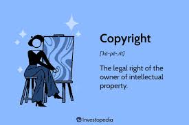

Plagiarism is the act of using someone else's work, ideas, or expressions without proper attribution or permission, presenting them as one's own. It can involve copying text, ideas, images, or any other creative content without giving credit to the original creator. Plagiarism not only violates intellectual property rights but also undermines the principles of academic integrity and honesty.
Implications of plagiarism can be severe, ranging from legal consequences such as copyright infringement lawsuits to academic penalties like failing grades, expulsion, or loss of reputation. In professional settings, it can lead to damaged credibility, loss of job opportunities, and legal liabilities.
To prevent plagiarism, individuals can take several measures:
Cite Sources Properly: Always acknowledge the sources of information, ideas, or content used in your work through citations or references.
Use Quotations: When directly quoting someone else's words, use quotation marks and provide proper citation.
Paraphrase Appropriately: If you're expressing someone else's ideas in your own words, ensure that you still give credit to the original source.
Understand Referencing Styles: Familiarize yourself with different citation styles (e.g., APA, MLA, Chicago) and use them correctly.
Use Plagiarism Detection Tools: Utilize plagiarism detection software to check your work for unintentional plagiarism before submission.
Develop Original Ideas: Focus on generating original thoughts and insights rather than relying solely on existing sources.
Cyberbullying
Cyberbullying refers to the use of digital communication tools, such as social media, instant messaging, or online forums, to harass, intimidate, or harm others. It often involves repeated aggressive behavior, such as posting hurtful messages, spreading rumors, sharing embarrassing photos or videos, or impersonating someone online. Cyberbullying can have serious psychological, emotional, and even physical consequences for the victims, including depression, anxiety, low self-esteem, and in extreme cases, self-harm or suicide.
Implications of cyberbullying can be significant and long-lasting. Victims may experience profound psychological distress, social isolation, and difficulties in their academic or professional lives. Cyberbullying incidents can also damage reputations, relationships, and communities, creating a hostile online environment that affects not only individuals but also broader online communities.
To prevent cyberbullying, individuals and communities can take various measures:
Educate and Raise Awareness: Promote awareness about the negative impact of cyberbullying through education campaigns, workshops, and discussions.
Promote Positive Online Behavior: Encourage responsible and respectful online behavior, emphasizing empathy, kindness, and digital citizenship.
Establish Clear Policies and Guidelines: Develop and enforce policies and guidelines that explicitly prohibit cyberbullying and outline consequences for perpetrators.
Encourage Reporting and Support Systems: Create safe channels for victims to report cyberbullying incidents and provide them with access to support resources, such as counselors, helplines, or online support groups.
Monitor Online Activities: Monitor online activities, especially among children and teenagers, and intervene promptly if cyberbullying is detected.
Foster a Supportive Environment: Foster a supportive and inclusive online environment where individuals feel empowered to speak out against cyberbullying and support each other.
Copyright

Copyright refers to the legal right granted to the creator of an original work, giving them exclusive rights to its use and distribution for a specified period. It covers various forms of creative expression, including literary, artistic, musical, and dramatic works, as well as software and other intellectual property. Copyright holders have the authority to reproduce, distribute, perform, display, and adapt their works, and others must obtain permission to use them in ways that are restricted by copyright law.
Implications of copyright infringement can include legal consequences such as lawsuits, financial penalties, and injunctions. Additionally, infringement can damage the reputation and financial interests of both the infringer and the original creator. It can also hinder innovation and creativity by discouraging investment in new works and technologies.
To prevent copyright infringement, individuals and organizations should:
Understand Copyright Law: Familiarize themselves with copyright laws and regulations in their jurisdiction to ensure compliance.
Obtain Permission: Seek permission from copyright holders before using their work in ways that are not covered by fair use or other exemptions.
Use Public Domain Works: Utilize works that are in the public domain, meaning they are not protected by copyright and can be freely used by anyone.
Apply Fair Use: Understand the principles of fair use or fair dealing, which allow limited use of copyrighted material without permission for purposes such as criticism, commentary, news reporting, teaching, scholarship, or research.
Create Original Content: Focus on creating original content rather than relying heavily on copyrighted material.
Attribute Sources: Provide proper attribution when using copyrighted material under fair use or with permission.
Legal implications
Cyberbullying:
Civil Lawsuits: Victims of cyberbullying can sue perpetrators for emotional distress, defamation, or invasion of privacy. Damages awarded in civil lawsuits can include compensation for medical expenses, therapy costs, and pain and suffering.
Criminal Charges: In severe cases, cyberbullying may lead to criminal charges, especially if it involves harassment, threats, or stalking. Offenders may face penalties such as fines, probation, or imprisonment.
Plagiarism:
Academic Penalties: In educational settings, students caught plagiarizing may face academic consequences, including failing grades, suspension, or expulsion.
Legal Action: Plagiarism can also lead to legal action, particularly if it involves copyright infringement. Content creators whose work has been plagiarized may sue for damages and seek injunctions to stop further distribution of the plagiarized material.
Copyright Infringement:
Civil Lawsuits: Copyright holders can file civil lawsuits against individuals or entities that infringe on their rights by reproducing, distributing, or performing their copyrighted work without permission. Damages in copyright infringement cases can include statutory damages and attorneys' fees.
Criminal Charges: In some cases, copyright infringement may constitute a criminal offense, especially if it involves large-scale piracy, counterfeiting, or commercial exploitation of copyrighted material. Offenders may face fines and imprisonment.
To prevent legal repercussions associated with cyberbullying, plagiarism, and copyright infringement, individuals should adhere to ethical standards, respect the rights of others, and comply with applicable laws and regulations. This includes obtaining proper permissions for using copyrighted material, citing sources appropriately to avoid plagiarism, and treating others with respect and kindness in online interactions to prevent cyberbullying. Additionally, seeking legal advice when uncertain about the legality of certain actions can help individuals navigate potential legal risks effectively.